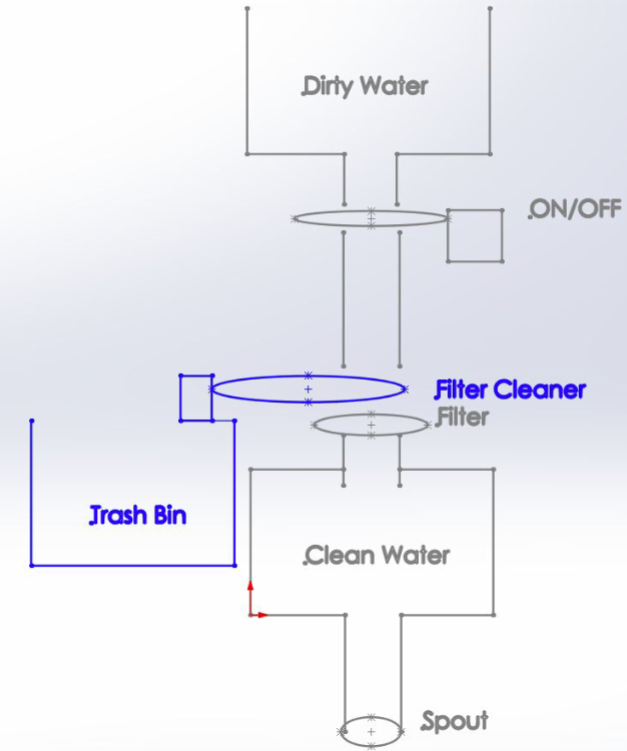
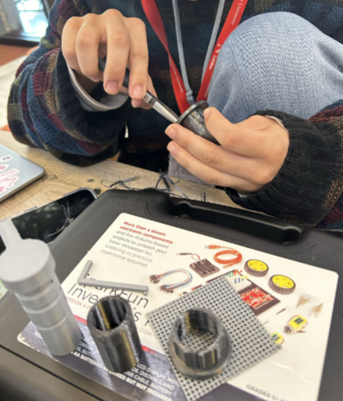

As part of an open-ended design project for Cornerstone of Engineering 2, our group decided to design an attainable water filter.
Access to clean drinking water remains a pressing global challenge, especially in remote or underserved communities where infrastructure is limited or nonexistent. Traditional water purification systems, while effective, are often expensive, difficult to maintain, or reliant on disposable components that are unsustainable in low-resource settings. This project aims to develop a low-cost, modular water filtration system using readily available household materials and 3D-printed components, making clean water more accessible and sustainable for everyone.
Current consumer-grade water filters, such as Brita pitchers, LifeStraw devices, and LARQ bottles, address different aspects of water purification. However, each comes with limitations. Brita filters require regular cartridge replacements and are designed for stationary home use. LifeStraw offers portable filtration but lacks reusability and requires significant suction to draw water. LARQ uses UV sterilization but is cost-prohibitive and battery-dependent. These products, while innovative, are not ideal for low-budget, field-repairable systems in disaster zones, rural areas, or developing regions.
Our solution focuses on affordability, and ease of use. By using Tupperware containers, repurposed water bottles, and custom 3D-printed connectors and spouts, we designed a filtration system that is simple to assemble, easy to clean, and adaptable to various use cases. What sets our design apart is that it can be made quickly without the need for advanced machines or parts. All parts are modeled in SolidWorks and can be modified digitally before printing, allowing users to scale or adjust the design based on their needs.


The goal is not only to filter water effectively but to do so in a way that allows users to repair, adapt, and reuse their system over time. This hands-on approach makes it ideal for educational environments, humanitarian aid, and emergency response scenarios. Ultimately, this design challenges the notion that water purification must be expensive or disposable and instead offers a pathway toward sustainable, DIY solutions.
The goal of this project was to create a simple, cost-effective, and easily maintainable water filtration system using accessible materials. Our approach centered around the design to be easily repairable, and the ability to scale or adapt the system for various areas without clean tap water.
The design process began by identifying key needs: the system had to be low-cost, gravity-fed, and easy to disassemble and clean. We generated several ideas and concepts by sketching and building small-scale mockups using plastic bottles and basic containers. When exploring the functionality of common water filtration devices like Brita and LifeStraw, we noted that they often required proprietary cartridges or suction-based flow, making them less suitable for scalable, user-modifiable systems. Our goal was to create a DIY alternative that could be adjusted and repaired without specialized parts. We found that common household items like water bottles and Tupperware containers were ideal for use as filtration chambers and water collection basins. These components were stackable, easy to make holes in, and widely available. The containers served as the upper and lower chambers in our gravity-fed system, with the filtration layers housed between them. To ensure leak-free operation and controllable water flow, we designed a set of custom 3D-printed parts using SolidWorks. Among these parts, the most important was the spout, which included a simple valve mechanism. This component allowed for water to be released only when needed by spinning the device to the left, and closing it by turning to the right. It was modeled to mimic the press faucets used in large office water dispensers, but scaled down for our project


The 3D-printed connectors and caps were developed to hold the chambers tightly together without relying on glue or permanent seals. Early in our design process, we tried using two cut plastic bottles with a 3d printed filter mesh. However, this setup leaked and had alignment issues, especially when any pressure was applied to the top chamber. Too much water would flow and would start to damage surrounding parts of the machine. This failure emphasized the importance of larger components that could be assembled and disassembled with ease. We ended up using duct tape and popsicle sticks to keep things in place and tight. This way ended up working and now our filter no longer leaks.
The final version of the filter system was designed around a top Tupperware container to hold unfiltered water, a removable filter cartridge that was 3d printed and a bottom container to collect clean water. These were joined using water bottles to catch water as it flowed down to the next section. The spout, mounted at the base of the bottom chamber, had a turning mechanism controlled dispensing. This time we sanded it down and it was a little tighter which made it harder to open and close. However, this allowed the user to leave the system sealed without leaking until they were ready to access the clean water.
To test the system, we used dirt in water to observe filtration effectiveness and check for leaks. The flow rate was acceptable for small-scale use, and no longer leaked at any section. Although we didn’t perform chemical analysis due to resource limitations, we confirmed the system could consistently remove physical debris and maintain a clean seal between components. We also tested the durability of the valve and found it worked reliably through multiple uses without signs of cracking or loosening. From an engineering design perspective, we learned about prototyping, iteration, and evaluating real-world performance. Our initial brainstorming led to a wide range of concepts, but hands-on testing showed which ideas were actually viable. Choosing between 3d printing exactly or buying components, required us to think not only about fit but about user convenience and price. Modeling in SolidWorks gave us the flexibility to revise small details like tolerances and seal depths without starting from scratch each time. Ultimately, we discovered that testing must be both functional and experiential, for example how easy it is to use, clean, and repair the system. The experience highlighted how engineering design is a dynamic process, requiring constant feedback and adjustment in response to real-world behavior.
This project set out to address the problem of accessible water filtration in areas where cost, maintenance, and availability of commercial systems pose significant challenges. Our aim was to design a system that is low-cost, easy to build, simple to maintain, and functional in a variety of environments. Recognizing the limitations of existing products like Brita, LifeStraw, and LARQ, we focused on creating a solution that was not only effective but also easy to reproduce using commonly available materials. Our idea was to develop a gravity-fed water filtration system using basic household containers and 3D-printed components. We designed the system to be modular so that parts could be repaired or replaced individually without requiring full replacement of the unit. The design includes a top Tupperware container for unfiltered water, a central removable filter cartridge, and a bottom container for clean water collection. A key component is the 3D-printed spout, which allows for clean dispensing without opening the container.


The methodology we used was hands-on from the start. We began by sketching concepts and testing basic prototypes using water bottles, 3d print mesh, and rubber bands. We then transitioned to digital modeling using SolidWorks to create precision-fit parts for 3D printing. Each prototype was tested for leakage, ease of assembly, and flow rate. Through this process, we learned to balance theoretical design principles with real-world usability. We also gained experience in choosing materials, designing for printability, and anticipating user interaction.
Looking forward, there are several ways to improve the design. First, using more durable, food-safe materials like some metals instead of plastic would enhance longevity. Second, integrating a replaceable filtration cartridge with activated carbon or a nylon mesh would allow for more robust purification. We also suggest adding a low-power UV sterilization module or temperature sensor in future iterations to broaden the system’s functionality. Lastly, conducting lab testing to evaluate the system’s performance against specific contaminants would help validate the design for field use. Overall, this project reinforced the value of simplicity, adaptability, and user-centered thinking in engineering design. It demonstrated that even basic tools and materials can lead to meaningful solutions when approached creatively and iteratively.
The following are links to overviews of this entire project. Keep in mind not everything is covered in this portfolio section and the documents are here for reference.
Project GuidelinesProject Overview